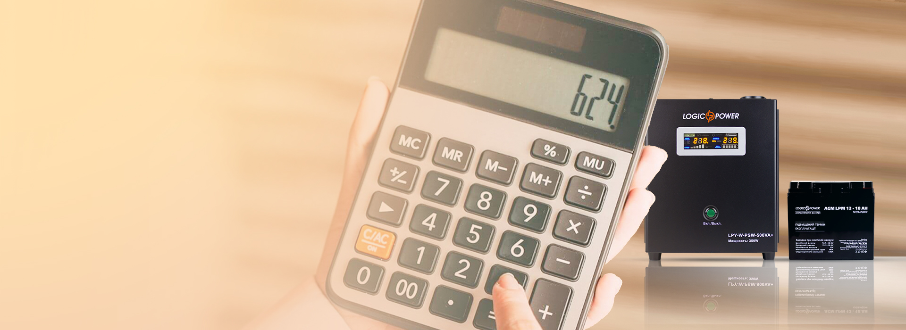
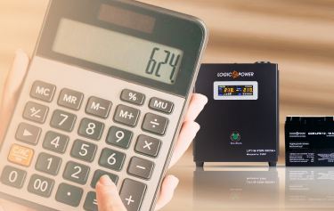

Расчет емкости аккумуляторной батареи для источника бесперебойного питания
Нагрузка, W:
W
КПД инвертора:
%
Время работы:
Ч
Номинальное напряжение АКБ:
V
Минимальная емкость АКБ:
Ah
Расчет времени автономной работы ИБП
Нагрузка, W:
W
КПД инвертора:
%
Ёмкость АКБ:
Ah
Номинальное напряжение АКБ:
V
Время работы ИБП:
Ah
Расчет емкости аккумуляторной батареи для UPS и время работы источника бесперебойного питания
Если вы владелец дорогого электрооборудования, которое требует стабильного и бесперебойного питания - без ИБП вам не обойтись.
Насколько проще была бы наша жизнь, если бы существовал универсальный источник бесперебойного питания на все случаи жизни?
На практике же, каждый пользователь предъявляет к источнику бесперебойного питания конкретные требования, которые зависят от назначения, типа и количества техники, которая будет подключена к ИБП.
Специалисты компании LogicPower считают, что к выбору UPS для дома или бизнеса необходимо подходить рационально. Калькулятор ИБП избавит вас от разочарований и лишних трат, если вы неправильно подберете мощность, тип ИБП или емкость аккумулятора.
Типы источников бесперебойного питания
Smart ИБП с двойным преобразованием применяют для высокочувствительной техники с большим количеством «электронной начинки».
Преимущества ИБП on-line:
- широкий диапазон входных напряжений (110-300V) при минимальном отклонении на выходе (220V±1%)
- скорость переключения режимов работы у бесперебойников смарт онлайн равна нулю
- модели Smart ИБП online с одинаковой мощностью можно параллельно соединять между собой
- возможность удаленного управления и контроля параметров работы инверторов напряжения.
ИБП линейно-интерактивные пользуются широким спросом у владельцев персональных компьютеров.
Преимущества линейно-интерактивных ИБП:
- линейно-интерактивные бесперебойники LogicPower имеют доступную стоимость при высоком качестве сборки и внутреннего наполнения
- встроенная функция AVR позволяет использовать UPS линейно-интерактивный как стабилизатор напряжения для компьютера
- время автономной работы от аккумулятора от 10 до 30 минут, что позволяет сохранить необходимые файлы и корректно отключить ПК
ИБП с правильной синусоидой в паре с внешним аккумулятором используют для обеспечения бесперебойного питания 24/7 систем автономного отопления, водоснабжения, видеонаблюдения и т.д.
Преимущества UPS с чистой синусоидой:
- источники бесперебойного питания с правильной синусоидой имеют широкий спектр защитных функций от: короткого замыкания, скачков напряжения, сетевых помех, разряда и избыточного заряда батарей, высокого/низкого напряжения
- скорость переключения у бесперебойников с чистой синусоидой на работу от аккумулятора и обратно – меньше секунды
ИБП гибридный MPPT с правильной синусоидой чаще всего используют для автономных систем бесперебойного питания на основе солнечных батарей. ИБП данного типа совместимы и с традиционными, и с альтернативными источниками электрической энергии.
Преимущества гибридных источников бесперебойного питания с MPPT контроллером:
- ИБП гибридный автоматически регулирует ток заряда внешней батареи при помощи микропроцессорного управления
- гибридный инвертор имеет высокую производительность, КПД – 98%
- UPS обеспечивает максимально точный контроль параметров работы и распределения вырабатываемой энергии
Онлайн калькулятор ИБП поможет произвести быстрый и точный расчет необходимой вам мощности источника бесперебойного питания с учетом суммарной мощности, подключенного к нему оборудования* и коэффициента запаса.
*Для расчетов берется мощность каждой единицы оборудования, указанная производителем в технической документации
Как выбрать аккумулятор для источника бесперебойного питания?
После того как вы определитесь с типом и мощностью источника бесперебойного питания, необходимо правильно подобрать аккумуляторную батарею.
Главный критерий выбора – необходимое вам время резервного питания электрооборудования от аккумуляторной батареи.
Типы аккумуляторов для ИБП
Аккумуляторы свинцово-кислотные AGМ герметичные необслуживаемые батареи пользуются широким спросом благодаря доступной стоимости. Кроме цены необслуживаемые АКБ данного типа имеют следующие преимущества: высокая надежность, стабильное напряжение, широкий диапазон рабочих температур. Рассчитаны на 400 циклов заряд/разряд
Мультигелевые аккумуляторные батареи – это модернизированные AGM аккумуляторы, которые имеют увеличенный ресурс циклов работы – 800.
Аккумуляторы гелевые GeL – благодаря вязкой структуре электролита не боятся низких температур и отлично работают при низком заряде батареи. Ресурс циклов заряд/разряд – 1200
Литий железо фосфатные АКБ отличаются устойчивостью к высоким и низким температурам окружающей среды, имеют хорошую производительность, минимальный уровень токсичности, компактные размеры и малый вес. Аккумуляторы Lifepo4 выдерживают более 7000 циклов
Онлайн калькулятор емкости аккумулятора для ИБП поможет правильно подобрать АКБ
Остались вопросы?
Технические эксперты LogicPower дадут квалифицированную консультацию и помогут Вам с выбором оборудования для систем бесперебойного питания
0(800) 211-405
LogicPower – стандарт напряжения!
Развернуть